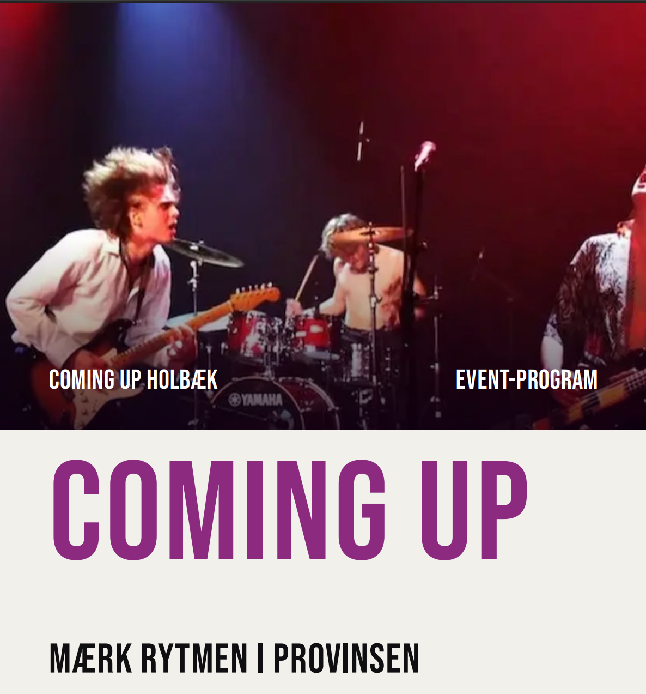

Brochure · Musik & fællesskab
Coming Up
Et brochurelayout, der præsenterer ungdomsmusikklubben med et tydeligt visuelt hierarki og plads til billeder.
Se PDF (åbner i ny fane)
Indhold til sociale medier.
Røde Kors Butik Herlev. Reels, stories og opslag, der skal få flere frivillige, lavet i Canva og CapCut.
Reels & stories
Opslag & karrusel